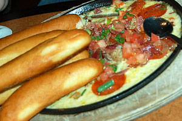

| 512-Go!» | TGI Friday’s |
|---|
| Menu |
|---|
|
| Review | January 16, 2007 |
|---|
I have a lot of love for Austin. The traffic. The dollar you-call-its. The prohibitive and ever-rising property value. But what I love most is the unending panoply of chain restaurants that stretch beyond the horizon, their bluish halide lights beckoning me, guiding me, as an ancient mariner navigating the majestic seas by divining the unknowable pattern of stars strewn, infinite, across the heavens.
Of course, Ferdinand Magellan and Juan Sebastián Elcano may have circumnavigated the globe, but they didn’t bring back any buffalo wings or mozzarella sticks. So I ask: What did they do that any chain restaurant since hasn’t done better, smarter, or more profitably? After all, which of these have you actually heard of: Juan Sebastián Elcano or a giant, whole-fried, bloomin’ white onion with ranch dipping sauce?
I thought so.
Our nation is a glistening, golden-brown beacon of technological and gastronomic achievement: No other society in history has dared deep-fry such a vast and beautiful cornucopia of fruits, vegetables, dairy products, and meat-things. By plane, train, and hyper-fusion space rocket, we import food from all over the world and subject it to total immersion in a variety of sumptuously named oils: cottonseed, rapeseed, and rendered animal fat.
But just when you thought our quest to deep-fry everything on Earth had plateaued – the last great innovation, after all, was the Stuffed Jalapeño Popper – a new culinary maverick emerged from the fry basket, sausage fingers smeared with shimmering grease: TGI Friday’s.
Ah, Friday’s – the rambunctious (within reason) refuge of teenage suburbanites. The weekday/weekend/whatever, family-friendly, feel-good funtime factory of festooned, fabricated Americana. Where our Great County’s middle management and corporate gearteeth escape every Thursday at 5 o’clock, slink into an overstuffed vinyl booth, and pickle their fat, bald heads in a brine of mid-shelf Cuervo margaritas and “tropical” spirits poured, pre-mixed, from a plastic bottle. Then, after a few “lite” beers, the Van Heusen neckties loosen, the F-bombs drop with aplomb, and 19-year-old waitresses smile with practiced gregariousness through bad jokes and bleary-eyed, drooling winks delivered by men old enough to be their fathers.
If you’re cool, you know that Friday’s has undergone a major facelift recently. They’ve renovated all 145 million billion of their franchises, replacing that blue-and-yellow T.G.I.F. logo with a fun-wacky, red-and-black, geometric jumble that finally answers the age-old philosophical dilemma: “What would a three-way between The White Stripes, Tim Burton, and Helvetica look like?”
The inside of Friday’s has changed, too. The waitstaff is no longer required to don suspenders, red-and-white striped polo shirts, or “flair” – a real downward slide if you’re into that trendy, barbershop quartet look. (Friday’s purists shouldn’t be too alarmed. The walls are still covered in prefab antiques, “stolen” road signs, and rotted washboards of all sizes. And the soundtrack is still firmly rooted in three-chord pop from the late 1960s.)
The truly impressive upgrades, however, are the exciting innovations they’ve added to their appetizer menu: Fried Green Beans, Fried Mac ‘n’ Cheese, and the Sizzling Triple Meat Fundito. (Fundito! Haha! What a crazy word! Fundito. Fun to eat-o!)
So what exactly is a “fundito”? And what makes the Wicked Wings so titularly fiendish? These vexing questions required the kind of pertinent investigative journalism for which That Other Paper is known the world over. So we cajoled a few friends, scoured the cushions for loose change and credit cards, and headed downtown to experience Friday’s revolution in fine fried dining.
“Hey! Have you guys seen the bats?”
The Friday’s host – a plump, elderly gentleman with flushed cheeks – is very excited, and he’s obviously used to tourists.
“The bats! Under the bridge! You seen ’em?”
We play along and tell him we haven’t. The man momentarily bends over behind the podium and pops back up wearing a baseball hat with an embroidered bat. His arms shoot out from his sides as if to say Ta-dah!
“Now you’ve seen the bats!”
Welcome to Friday’s.
As if by provenance or dramatic invention, “Nowhere to Run” begins playing as we’re led to our table. The waitress, a 20-something woman lightly shrouded in irony, rattles off the new appetizer specials. We order the Crispy Green Bean Fries and peruse the menu.
Eric Seufert The Fried Mac & Cheese looks so gross.
Kristin Hillery Yet strangely intriguing. I want it.
Jill Morris Everybody wants it.
Kristin What about the meat and cheese with bread?
David Strauss The Meat Fundito?
Eric I don’t even know what that is. Is it a pizza without the bread?
Kristin It’s a pizza that’s all fucked up.
David It’s a hot skillet of pure cheese and meat, and you dip white bread in it.
Jill That’s not gonna fill you up.
Eric I know. It’s the appetizer.
Our fried green beans arrive. The advertised “cool, creamy Cucumber-Wasabi Ranch dip” is, like most of Friday’s patrons, heavy on the Ranch. At least it’s a recommended daily serving of vegetables, right?
We order Wicked Wings with piña colada sauce, Fried Mac & Cheese, Parmesan-Crusted Sicilian Quesadillas, Potato Skinny Dippers, and the Sizzling Triple Meat Fundito. And if you think ordering appetizers with zany names is half the fun, you’d be right!
Todd Nienkerk It’s called a “fundito”? A “meat fundito”?
Eric Todd – it’s the Sizzling Triple Meat Fundito.
David It’s three kinds of meat with lots of cheese. And it’s not even lean meat—it’s pepperoni and stuff. Pepperoni, Italian sausage, and bacon.
Kristin But will it be still sizzling when it comes out?
photo / Kristin Hillery Enter the Sizzling Triple Meat FunditoEric I’m gonna eat it with my hands.
David I want to shove it in my face and scrape it into my mouth.
As if by narrative device, the Fundito arrives first. It’s a bubbling concoction of cheese, pepperoni, and sausage served in a cast-iron skillet. Five breadsticks are stacked in the corner – an amount so disproportionate to the “dip” in the skillet that one wonders exactly how they determined the cheese-to-bread ratio. A corporate restaurant like Friday’s orders extensive market studies and focus groups before investing in an expensive menu upgrade; by that reasoning, the average American restaurant goer must prefer a cheese-to-bread ratio somewhere between “death by cheese” and “I don’t want to poop for a week.”
Todd Please get a picture of this here. It’s developed a nice cheese skin. A fried cheese skin.
David Lemme try that.
Jill Eww! It’s crunchy!
David The fried cheese skin is good stuff.
Todd Well, yeah. It’s fried cheese. And it should be noted, too, that the breadsticks are fried.
David Are they?
Todd Oh, yeah.
We take turns scooping a lump of meat-cheese onto a nub of bread and collectively decide not to do that ever again.
Aaron Oh, the Fried Mac & Cheese is here!
David Nice presentation.
Jill No kidding.
Kristin How is it?
David It’s starch and cheese. Fried.
Eric I feel awful about putting that in my body.
David Wait, you feel okay about the Meat Fundito, but okay about this?
Jill I love how fancy the plate is considering what it is.
David It’s even sprinkled with parsley.
Eric I’d like to see someone make this at home. Some fat slob on a Friday, sitting at home all day, thinking about it. On his computer, like, Man.
Elizabeth Barksdale How do you fry something like this?
Todd I’m sure it’s cooked, frozen, dropped in dough, and fried.
Jill I’m sure this is all frozen, prepackaged–
Todd It’s all shipped in.
Jill And I love it!
Todd In fact, they’ll just take that whole iron skillet and toss it when you’re done.
The Fried Mac & Cheese is not so much an appetizer as it is an experience. An experience like a divorce followed by a lengthy and bitter custody battle. That’s the most literal way I can describe it.
Elizabeth What’d you get?
Jill Potato Skinny Dippers. If I eat these, will I get skinny? I bet no one’s ever made that joke.
Eric Wait, this is a potato wedge?
Jill It’s so greasy.
Elizabeth What’s this, mayo?
Jill I think it’s sour cream.
According to the Friday’s menu, the Potato Skinny Dippers – the “latest twist on potato skins” – are five potato wedges served with two dips: queso with chorizo and “cool, spicy Southwestern sour cream.”
David It’s some kind of a sour cream dip with chili powder.
Todd They don’t give you a lot of potato for all the stuff you get.
Eric Yeah, that’s a lot of dip.
Jill Why did they give us a bunch of cheese and a cup of sour cream for five French Fries?
Todd There’s no way anyone could eat all that cheese.
The patented Friday’s Cheese Ratio strikes again.
Though the remaining appetizers are less ridiculous, they are each fatally flawed. The Parmesan-Crusted Sicilian Quesadillas are a confused hodgepodge of Mexican and Italian cuisines. (Monterey Jack cheese and flour tortillas do not sit well with Balsamic glaze, bruschetta, and three types of meat.) And the Wicked Wings – a.k.a. “boneless” chicken wings, a.k.a. regular, old chicken nuggets – in piña colada sauce are decent, though we suspect the sauce is approximately three-quarters high-fructose corn syrup.
Jill Meeting up at Friday’s…. It’s like we’re 14.
Todd And our parents dropped us off.
Jill Don’t go to the bathroom, or you’ll come back with ketchup in your drink!
Eric I’m gonna go smoke a cigarette in the alley. Like the bad kids.
David We came to this Friday’s because it’s next to Tinseltown movie theater, right?
Having accomplished our mission and sampled the “exciting” new appetizers, we revert to more traditional Friday’s entrées and subsequently commit epicurean heresy: Aaron and Eric order inauthentic fajitas served with microwaved tortillas from a bag, Jill and Kristin order Jack Daniel’s® Registered Trademark-Brand Steaks, and I try some kind of Asian chicken salad thing.
Jill I feel sick.
Elizabeth I think the fried food just hit home or something.
Jill I feel terrible.
Todd It may just be cheap liquor in the drinks.
Jill No, it’s not that.
Elizabeth I feel bad, too, and I didn’t drink anything.
Jill I guarantee you it’s the food.
Eric I think it was that macaroni and cheese.
Elizabeth It was the combination of all that crap we ate.
We leave Friday’s slightly bloated, bow-legged, and wiser. On the way out, the host asks us if we want $5 coupons for our next visit, which we gladly accept because we’re cheap hypocrites.


Comments
hahahaha best restaurant review, ever.
Awesome article. You guys just cranked up the volume on restaurant reviews!!! Reading this was Fundito!!! Okay I’ll stop… :)
meat-things!